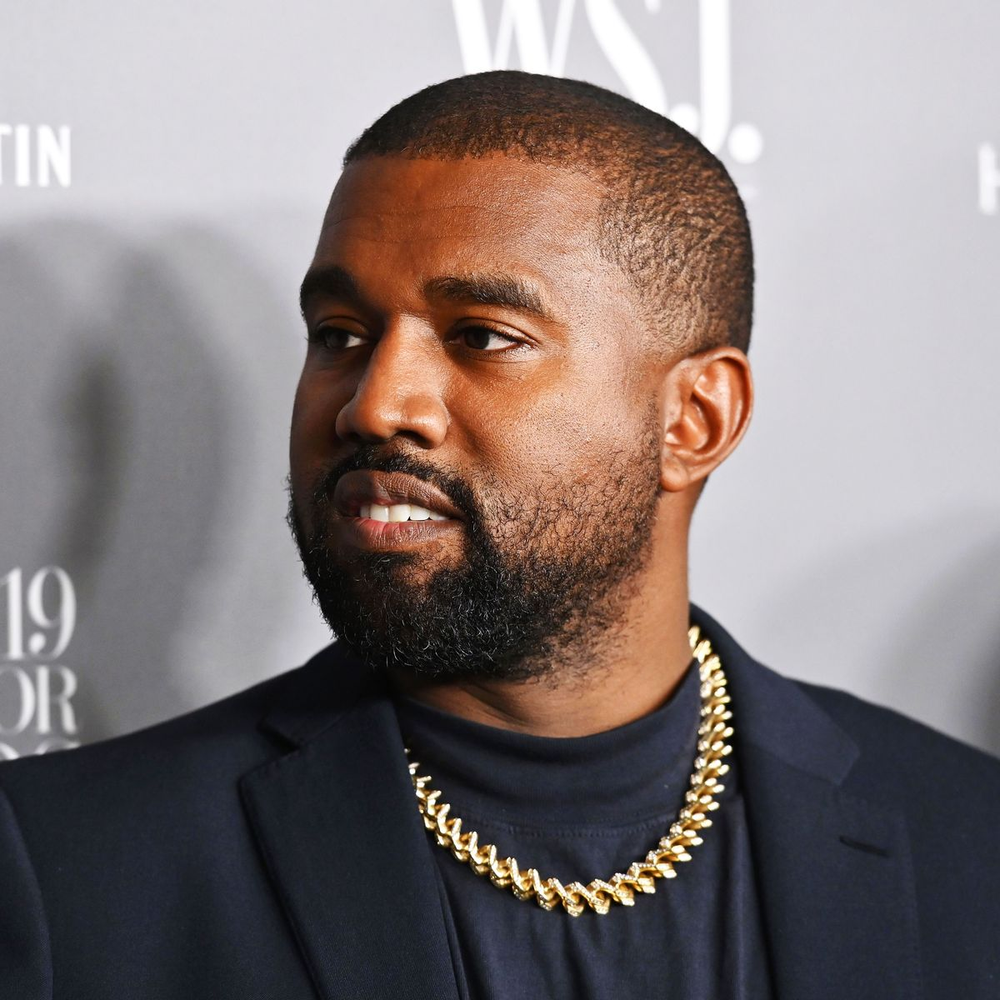
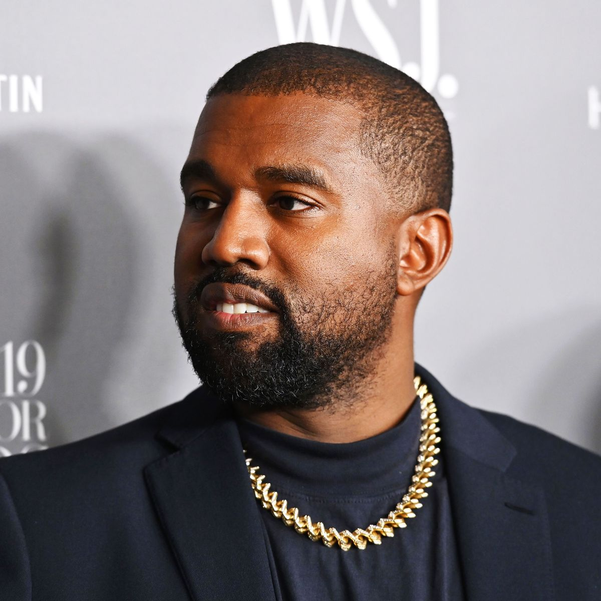
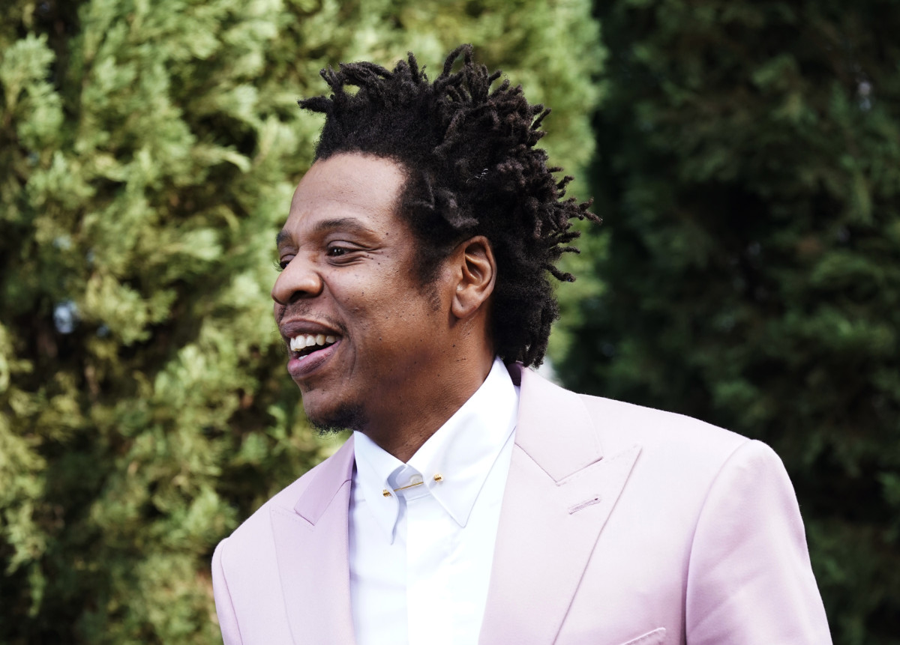
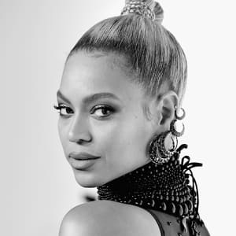
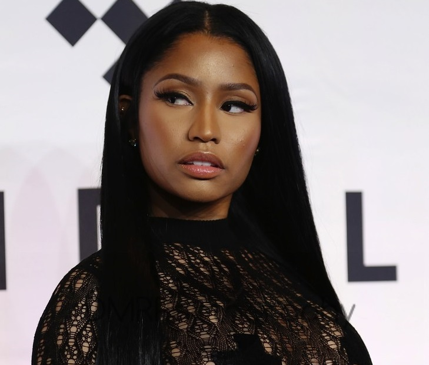
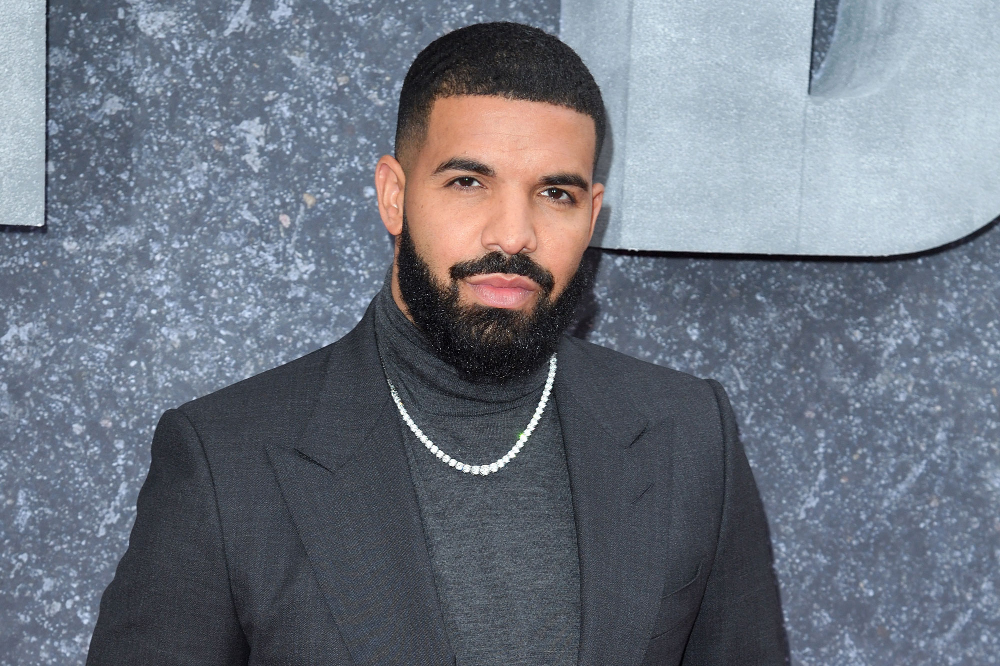
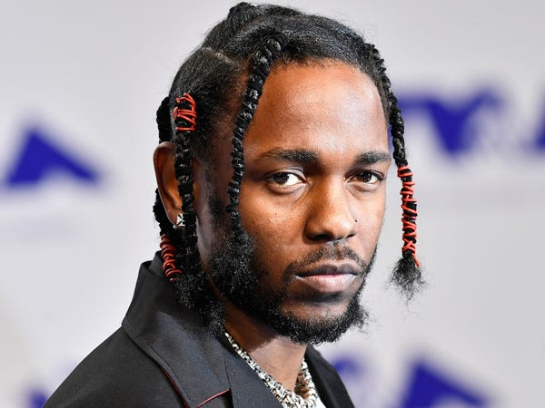

Kanye West
Kanye West is one of the world's best-selling music artists, with more than 20 million albums and 140 million singles sold worldwide. He has won a total of 21 Grammy Awards, making him one of the most awarded artists of all time.

Hip hop music, also known as rap music, is a genre of popular music developed in the United States by inner-city African Americans and Latino Americans in the Bronx borough of New York City in the 1970s. Hip hop as both a musical genre and a culture was formed during the 1970s when block parties became increasingly popular in New York City, particularly among African American youth residing in the Bronx. At block parties DJs played percussive breaks of popular songs using two turntables and a DJ mixer to be able to play breaks from two copies of the same record, alternating from one to the other and extending the "break". Hip hop's early evolution occurred as sampling technology and drum machines became widely available and affordable. Turntablist techniques such as scratching and beatmatching developed along with the breaks and Jamaican toasting, a chanting vocal style, was used over the beats. Rapping developed as a vocal style in which the artist speaks or chants along rhythmically with an instrumental or synthesized beat.
Kanye West is one of the world's best-selling music artists, with more than 20 million albums and 140 million singles sold worldwide. He has won a total of 21 Grammy Awards, making him one of the most awarded artists of all time.
Jay-Z is one of the world's best-selling music artists, with over 50 million albums and 75 million singles sold worldwide. He has won a total of 22 Grammy Awards, the most by a rapper, and holds the record for the most number-one albums by a solo artist on the Billboard 200, with 14.
Beyoncé is one of the world's best-selling recording artists, having sold 118 million records worldwide. Her success during the 2000s was recognized with the Recording Industry Association of America's Top Certified Artist of the Decade, as well as Billboard magazine's Top Radio Songs Artist and the Top Female Artist of the Decade. Beyoncé is the most nominated woman in the Grammy Award's history and has the second most wins for a woman with a total of 24.
Cited as one of the most influential female rap artists of all time, Minaj has sold an estimated 100 million records worldwide, making her one of the world's best selling music artists. Throughout her career, Minaj has received numerous accolades, including six American Music Awards, twelve BET Awards, four MTV Video Music Awards, four Billboard Music Awards, and two Billboard Women in Music Awards. She has also been nominated for 10 Grammy Awards.
Among the world's best-selling music artists, with over 170 million records sold, Drake is ranked as the world's highest-certified digital singles artist by the RIAA. He has won four Grammy Awards, six American Music Awards, a record 27 Billboard Music Awards, two Brit Awards and three Juno Awards. Drake also holds several Billboard chart records
Kendrick Lamar has received many accolades over the course of his career, including 13 Grammy Awards, two American Music Awards, five Billboard Music Awards, a Brit Award, 11 MTV Video Music Awards, a Pulitzer Prize, and an Academy Award nomination. In 2012, MTV named him the Hottest MC in the Game on their annual list. Time named him one of the 100 most influential people in the world in 2016. In 2015, he received the California State Senate's Generational Icon Award
